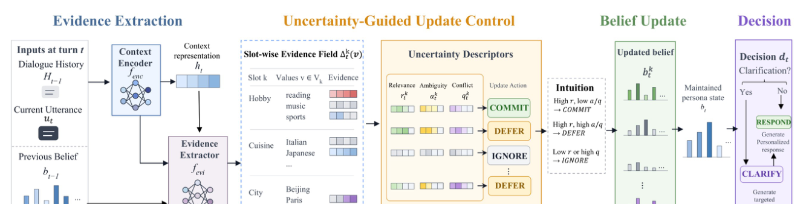

I am Youyuan Zhang (张友媛), a researcher interested in trustworthy AI agents and reliable adaptation during long-horizon interactions. I graduated from Northeastern University, China in June 2026 with a B.S. in Information Management and Information Systems (overall rank 1/78).我是张友媛（Youyuan Zhang），主要关注可信 AI 智能体以及长程交互中的可靠适应问题。2026 年 6 月毕业于东北大学信息管理与信息系统专业，本科综合排名 1/78。
My work focuses on how language models and agents can maintain stable decisions as user intent, interaction history, and environments evolve. My research covers LLM alignment, multimodal knowledge editing, and reinforcement learning for agents.我希望研究：当用户意图、交互历史与环境持续变化时，语言模型和智能体如何保持稳定的决策。相关工作涵盖大模型对齐、多模态知识编辑以及智能体强化学习。
Trustworthy AI AgentsLong-Horizon InteractionReliable AdaptationMultimodal LLMs
📖Education教育经历
2022.09 – 2026.06
Northeastern University (NEU), China东北大学（NEU）
B.S. in Information Management and Information Systems信息管理与信息系统 · 本科
Worked on wildfire-spread forecasting using conditional diffusion (EDM), pretrained physics simulation, and probabilistic modeling.使用条件扩散（EDM）、预训练物理模拟器与概率建模开展野火蔓延预测研究。
2026.02 – 2026.05
Sony (China) · Algorithm Research Intern索尼（中国） · 算法研究实习生
Applied SFT, GRPO, DeepSpeed, Megatron-LM, and vLLM to multimodal model post-training and serving, alongside FLUX-based diffusion inference optimization.使用 SFT、GRPO、DeepSpeed、Megatron-LM 与 vLLM 开展多模态模型后训练及推理服务，并基于 FLUX 优化扩散模型推理。
Undergraduate Project本科科研项目
National Undergraduate Innovation & Entrepreneurship Project · Lead国家级大学生创新创业项目 · 负责人
Applied adaptive convolution, computer vision, and model deployment to crop seedling and weed detection.应用自适应卷积、计算机视觉与模型部署技术开展作物幼苗和杂草检测。
🔥News近期动态
Our paper CORE was accepted to EMNLP 2026 Findings.CORE 论文被 EMNLP 2026 Findings 接收。
Our work ScopeEdit was released as an arXiv preprint.ScopeEdit 已在 arXiv 发布预印本。
M-ORE appeared at ICML 2026.M-ORE 论文发表于 ICML 2026。
Started an algorithm research internship at Sony (China).开始在索尼（中国）进行算法研究实习。
📝Selected Publications代表性论文

EMNLP 2026 Findings
Toward Robust Personalized Alignment for LLMs: Mitigating Persona Drift in Multi-Turn Dialogue
Youyuan Zhang, Siyuan Li, Fangming Liu, Jing Li
Uncertainty-aware belief revision to keep long-term persona states stable under ambiguous and conflicting observations.通过不确定性感知的信念修订，在含糊或冲突反馈下维护长期稳定的用户状态。
Including 8 national-level and 16 provincial-level awards in total; the named distinctions below are detailed in my CV.累计获得国家级奖项 8 项、省级奖项 16 项；下方展开列出简历中有具体名称的奖项与荣誉。
Scholarships & Distinctions奖学金与个人荣誉
National Scholarship国家奖学金20232023
National Encouragement Scholarship国家励志奖学金2024 · 20252024 · 2025